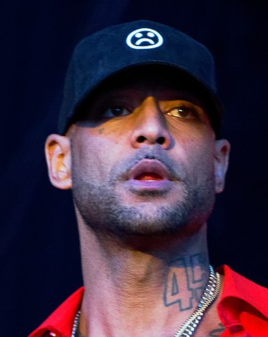

Booba
Album: Futur
Année: 2012
Tracklist
- G5 - Intro
- Maki Sall Music
- Caramel
- Tombé pour elle
- Kalash (featuring Kaaris)
Autres albums de l'artiste
- Temps mort (2002)
- Ouest Side (2006)
- Trône (2017)
🎧 Bienvenue sur mon mini Spotify 🎧
Appuyez sur ▶️ pour jouer la musique !
biographie
Booba, de son vrai nom Élie Yaffa, né le 9 décembre 1976 à Sèvres, est un rappeur, acteur et entrepreneur français. Il est également le fondateur du 92i, collectif regroupant initialement des rappeurs issus des Hauts-de-Seine, tels Mala, Nessbeal et Bram's ; il est également membre du groupe de rap français Lunatic, avec son ancien acolyte Ali, au sein duquel ils se sont fait connaître au milieu des années 1990.
Homme d'affaires très actif, il lance en 2004 sa marque de vêtements streetwear Ünkut puis, suivront au fil des années, un parfum, la marque de whisky D.U.C ainsi qu'un site web, une chaîne de télévision et une webradio, tous trois autour de la marque OKLM. En novembre 2018, Booba met un terme à sa collaboration avec les différents investisseurs d'Ünkut, mettant fin à l'existence de la marque. Il revient en septembre 2019 dans l'industrie du textile pour le lancement de sa nouvelle marque, Disconnected.